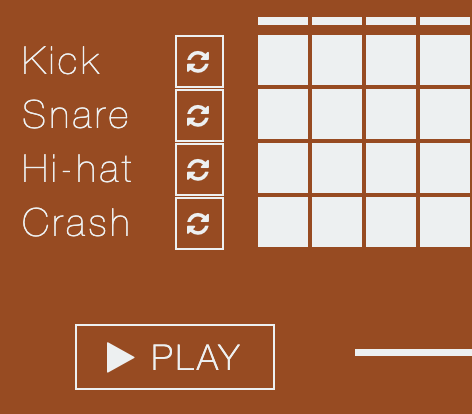
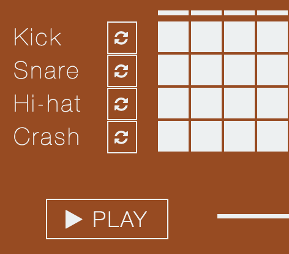

Sampler
Keyboard playable sampler, featuring sound uploading.

Drum machine
Programmable 16 step drum machine, with sample uploading.
Keyboard playable sampler, featuring sound uploading.
Programmable 16 step drum machine, with sample uploading.
This project provides a quick and accessible way to play instruments on the browser. No DAW or plugins needed. It's also a way to experiment with the Webaudio javascript API.
An ongoing project by Leonardo Lanzinger.